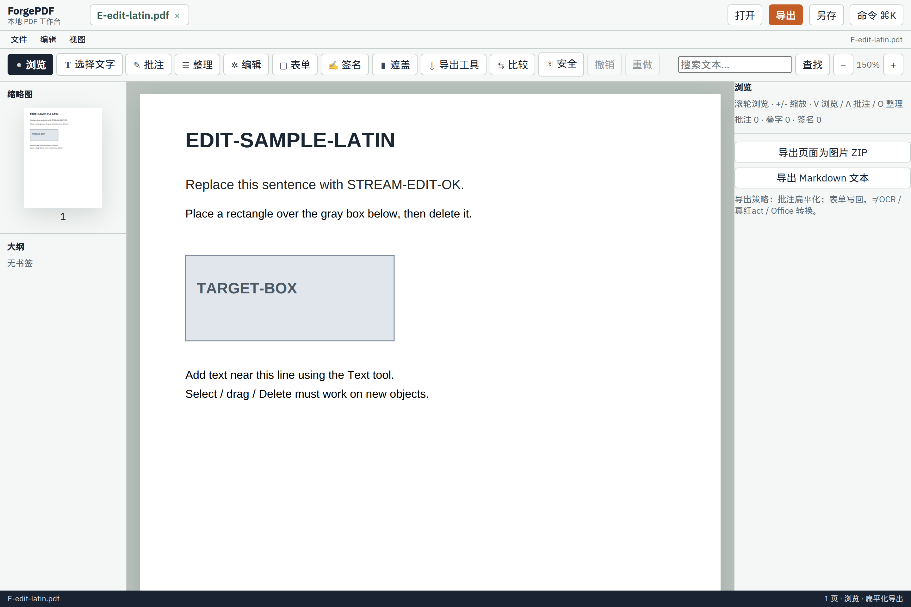
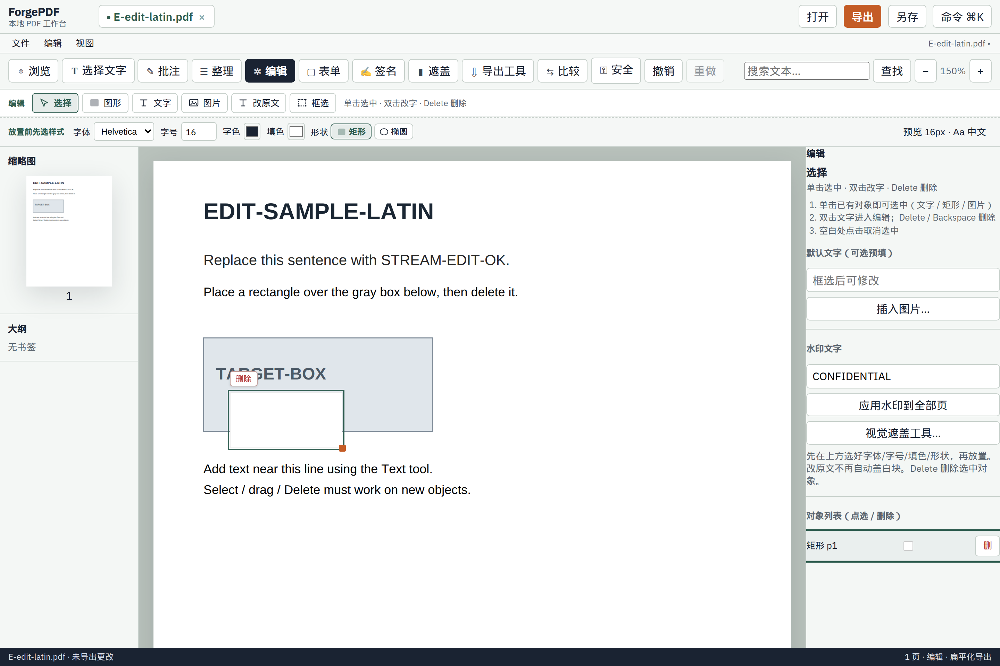
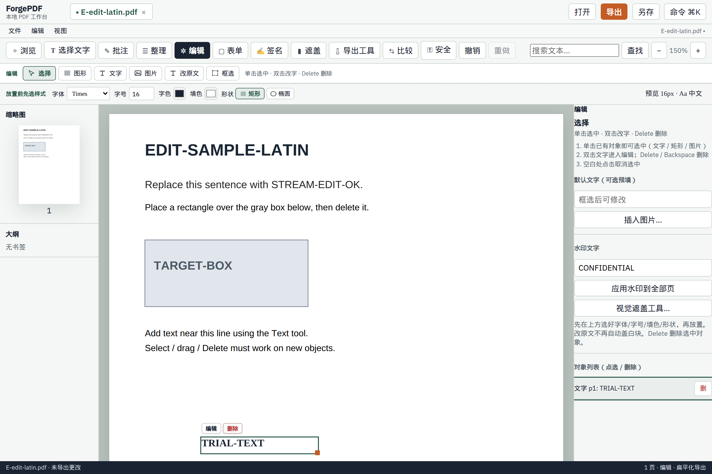
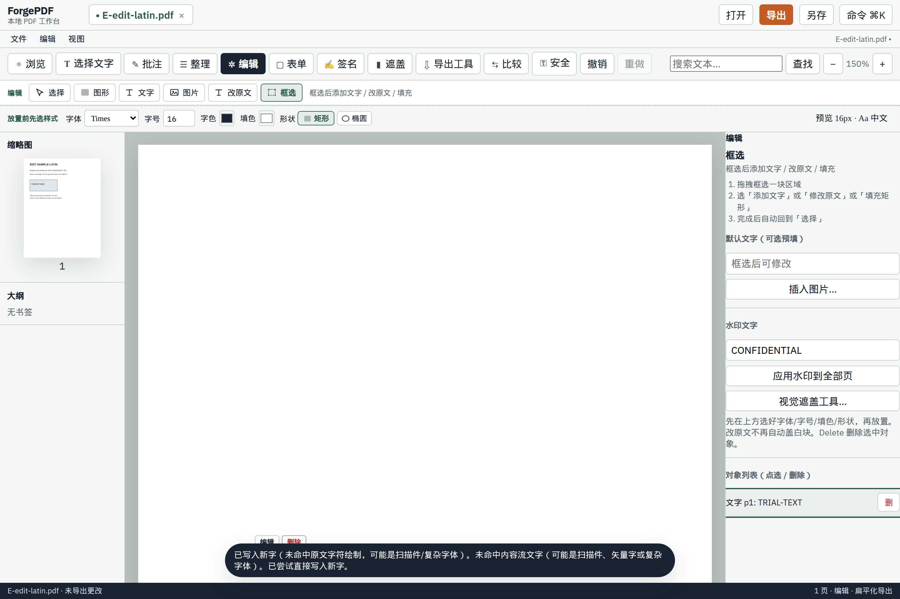
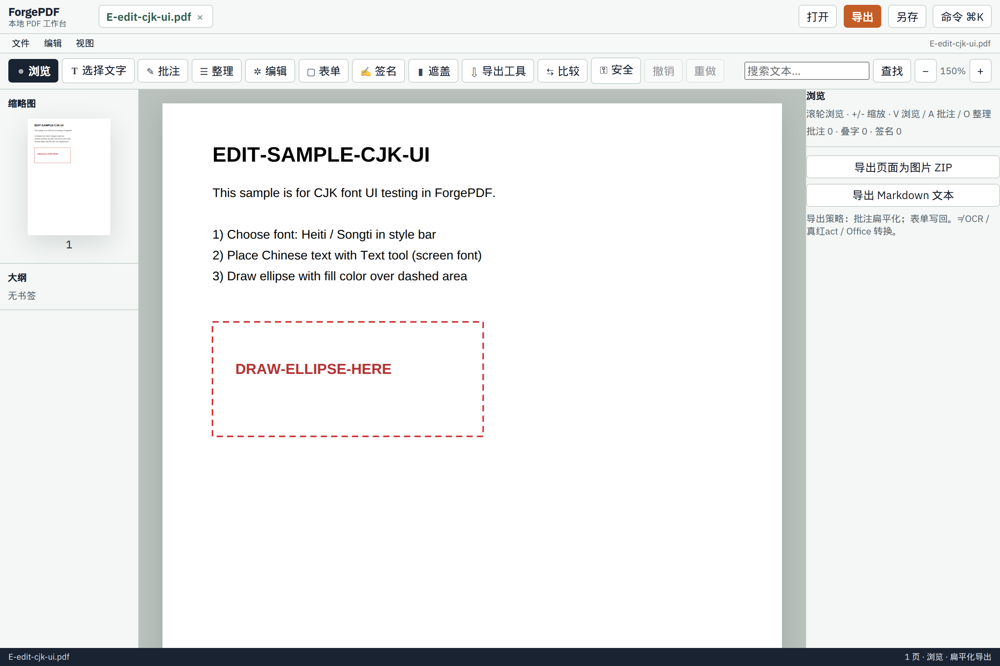
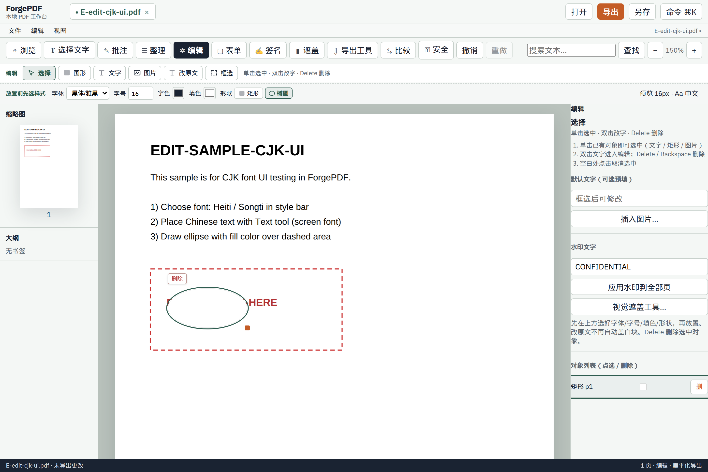
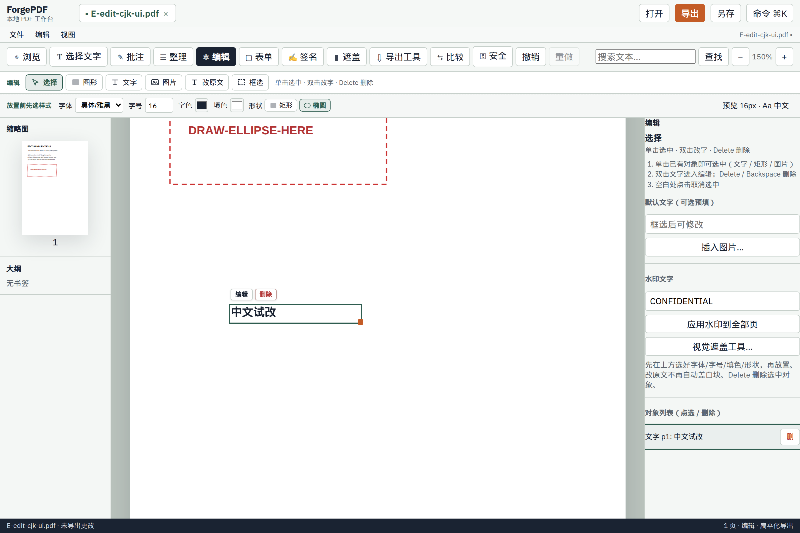
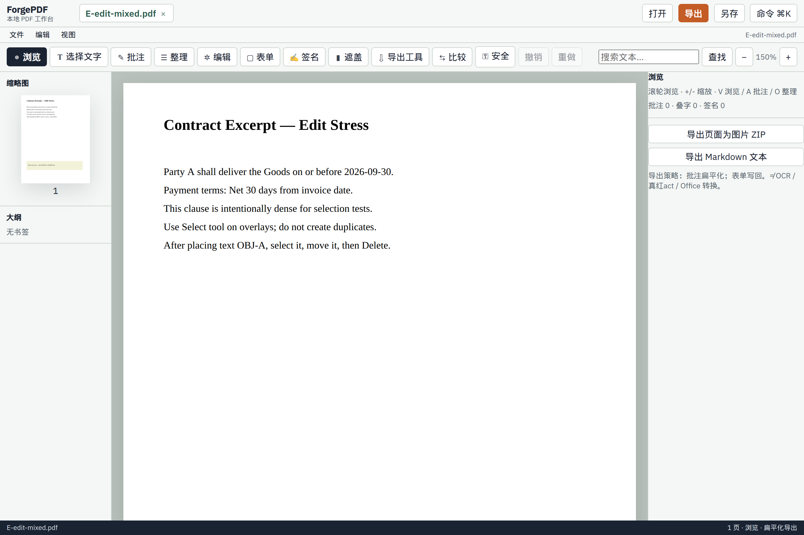
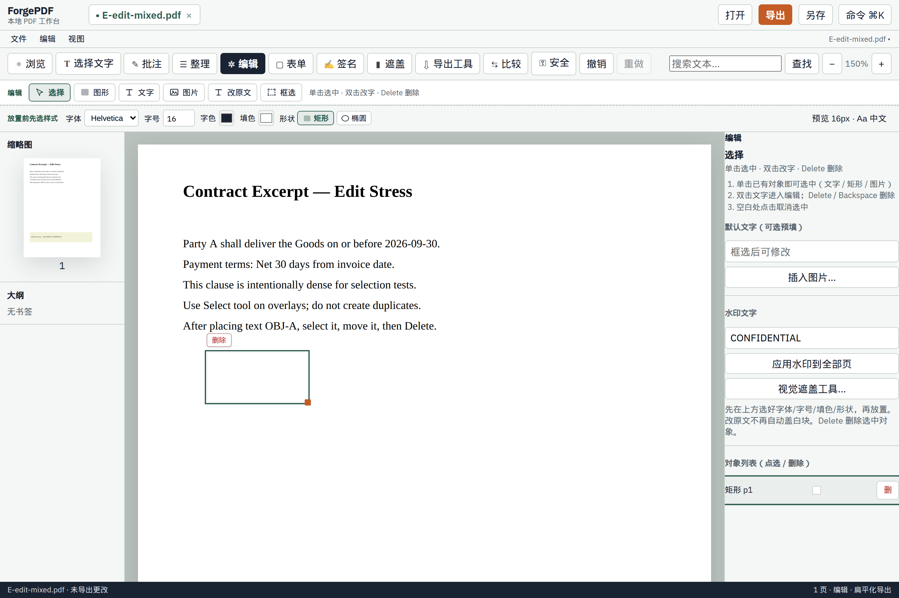
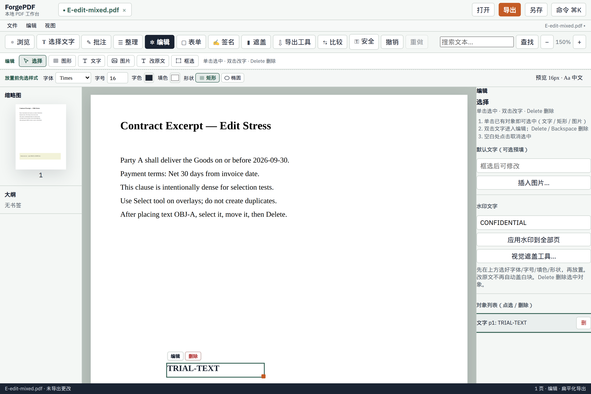

ForgePDF 编辑试用报告
2026-09-07T02:45:40.410Z · cases=3 · bugs=0
未发现脚本断言失败。
latin — Latin stream/text/shape
zoom=150% · canvas={"bitmap":"1836x2376","css":"918x1188","dprApprox":2,"edgeDensity":1458} · regionMenu=添加文字|修改原文|填充矩形|插入图片|
- OK HiDPI render ~2x
- OK text edges present (1458)
- OK style bar visible
- OK shape created (1)
- OK shape auto-selected
- OK shape deleted
- OK text placed: TRIAL-TEXT
- OK returned to select after text
- OK text re-selectable
- OK no auto white block after text
- OK stream-edit path exercised
- OK no page errors

latin-01-baseline.png
latin-02-shape.png
latin-03-text.png
latin-04-stream.pngcjk — CJK UI font + ellipse
zoom=150% · canvas={"bitmap":"1785x2526","css":"893x1263","dprApprox":2,"edgeDensity":1376}
- OK HiDPI render ~2x
- OK text edges present (1376)
- OK style bar visible
- OK shape created (1)
- OK shape auto-selected
- OK shape deleted
- OK text placed: 中文试改
- OK returned to select after text
- OK text re-selectable
- OK no auto white block after text
- OK no page errors

cjk-01-baseline.png
cjk-02-shape.png
cjk-03-text.pngmixed — Mixed stress select/delete
zoom=150% · canvas={"bitmap":"1836x2376","css":"918x1188","dprApprox":2,"edgeDensity":1613}
- OK HiDPI render ~2x
- OK text edges present (1613)
- OK style bar visible
- OK shape created (1)
- OK shape auto-selected
- OK shape deleted
- OK text placed: TRIAL-TEXT
- OK returned to select after text
- OK text re-selectable
- OK no auto white block after text
- OK no page errors

mixed-01-baseline.png
mixed-02-shape.png
mixed-03-text.png